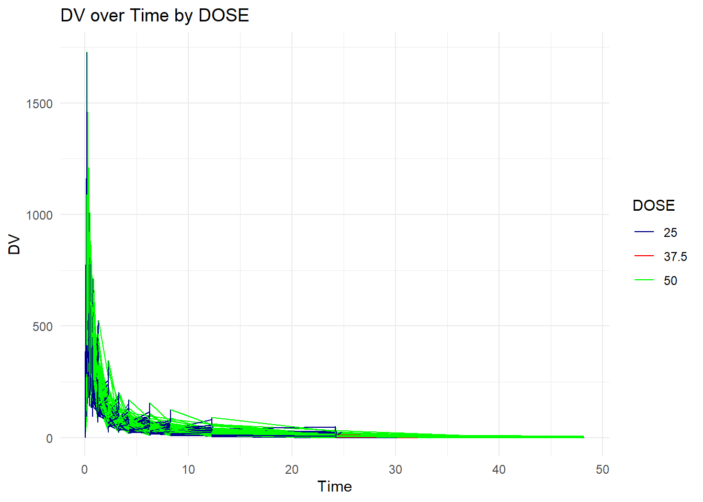
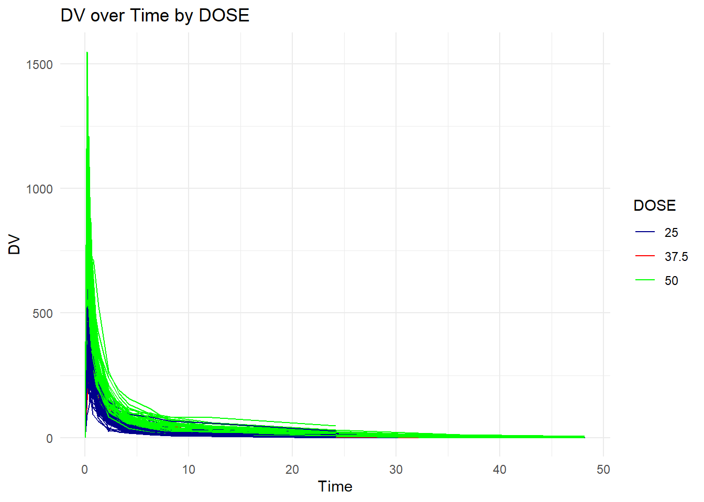
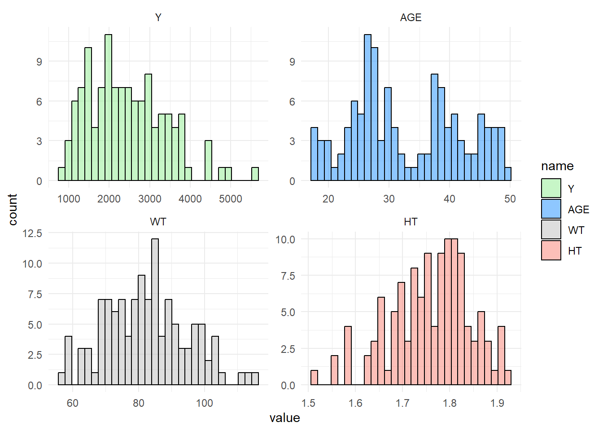
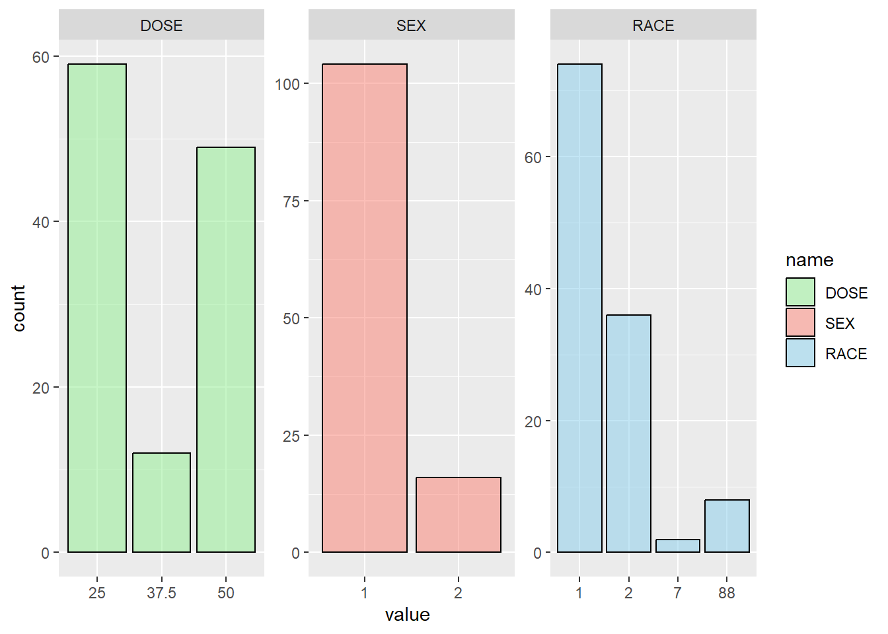

library(readxl) #for loading Excel files
library(dplyr) #for data processing/cleaning
library(tidyr) #for data processing/cleaning
library(skimr) #for nice visualization of data
library(here) #to set paths
library(ggplot2) # for plots
library(gtsummary)# for summary tables
library(patchwork) #for combine plots
library(tidymodels)fitting-exercise
In this exercise, a model is fitted to a data set (mavoglurant_A2121_nmpk) from the R package nlmixr2data First, required packages are installed and loaded.
Data is loaded
# path to data using here function
data_location <- here::here("fitting-exercise","Mavoglurant_A2121_nmpk.csv")
rawdata <- read.csv(data_location)Checking the data
head(rawdata) ID CMT EVID EVI2 MDV DV LNDV AMT TIME DOSE OCC RATE AGE SEX RACE WT
1 793 1 1 1 1 0 0.000 25 0.000 25 1 75 42 1 2 94.3
2 793 2 0 0 0 491 6.196 0 0.200 25 1 0 42 1 2 94.3
3 793 2 0 0 0 605 6.405 0 0.250 25 1 0 42 1 2 94.3
4 793 2 0 0 0 556 6.321 0 0.367 25 1 0 42 1 2 94.3
5 793 2 0 0 0 310 5.737 0 0.533 25 1 0 42 1 2 94.3
6 793 2 0 0 0 237 5.468 0 0.700 25 1 0 42 1 2 94.3
HT
1 1.769997
2 1.769997
3 1.769997
4 1.769997
5 1.769997
6 1.769997skimr::skim(rawdata)| Name | rawdata |
| Number of rows | 2678 |
| Number of columns | 17 |
| _______________________ | |
| Column type frequency: | |
| numeric | 17 |
| ________________________ | |
| Group variables | None |
Variable type: numeric
| skim_variable | n_missing | complete_rate | mean | sd | p0 | p25 | p50 | p75 | p100 | hist |
|---|---|---|---|---|---|---|---|---|---|---|
| ID | 0 | 1 | 858.81 | 34.08 | 793.00 | 832.00 | 860.00 | 888.00 | 915.00 | ▅▆▇▇▇ |
| CMT | 0 | 1 | 1.93 | 0.26 | 1.00 | 2.00 | 2.00 | 2.00 | 2.00 | ▁▁▁▁▇ |
| EVID | 0 | 1 | 0.07 | 0.26 | 0.00 | 0.00 | 0.00 | 0.00 | 1.00 | ▇▁▁▁▁ |
| EVI2 | 0 | 1 | 0.16 | 0.70 | 0.00 | 0.00 | 0.00 | 0.00 | 4.00 | ▇▁▁▁▁ |
| MDV | 0 | 1 | 0.09 | 0.29 | 0.00 | 0.00 | 0.00 | 0.00 | 1.00 | ▇▁▁▁▁ |
| DV | 0 | 1 | 179.93 | 226.28 | 0.00 | 23.52 | 74.20 | 283.00 | 1730.00 | ▇▂▁▁▁ |
| LNDV | 0 | 1 | 4.08 | 1.88 | 0.00 | 3.16 | 4.31 | 5.64 | 7.46 | ▃▃▇▇▅ |
| AMT | 0 | 1 | 2.76 | 10.32 | 0.00 | 0.00 | 0.00 | 0.00 | 50.00 | ▇▁▁▁▁ |
| TIME | 0 | 1 | 5.85 | 8.91 | 0.00 | 0.58 | 2.25 | 6.36 | 48.22 | ▇▁▁▁▁ |
| DOSE | 0 | 1 | 37.37 | 12.05 | 25.00 | 25.00 | 37.50 | 50.00 | 50.00 | ▇▁▁▁▇ |
| OCC | 0 | 1 | 1.38 | 0.49 | 1.00 | 1.00 | 1.00 | 2.00 | 2.00 | ▇▁▁▁▅ |
| RATE | 0 | 1 | 16.55 | 61.88 | 0.00 | 0.00 | 0.00 | 0.00 | 300.00 | ▇▁▁▁▁ |
| AGE | 0 | 1 | 32.90 | 8.87 | 18.00 | 26.00 | 31.00 | 40.00 | 50.00 | ▆▇▅▅▅ |
| SEX | 0 | 1 | 1.13 | 0.33 | 1.00 | 1.00 | 1.00 | 1.00 | 2.00 | ▇▁▁▁▁ |
| RACE | 0 | 1 | 7.41 | 21.97 | 1.00 | 1.00 | 1.00 | 2.00 | 88.00 | ▇▁▁▁▁ |
| WT | 0 | 1 | 83.16 | 12.48 | 56.60 | 73.30 | 82.60 | 90.60 | 115.30 | ▂▇▇▅▁ |
| HT | 0 | 1 | 1.76 | 0.08 | 1.52 | 1.71 | 1.78 | 1.82 | 1.93 | ▁▃▆▇▃ |
Next, a plot of DV over time stratified by Dose is created to have a visual inspection of the data. A line for each individual is created by grouping the observations by ID. .
#Defining a color palette for the chart
custom_colors <- c("darkblue", "red", "green" )
#The 'group' aesthetic is used to connect observations by ID in order to show a line for each individual
ggplot(rawdata, aes (x=TIME, y = DV, group = ID, color=as.factor(DOSE))) +
geom_line() +
labs(title = "DV over Time by DOSE", x = "Time", y = "DV", color="DOSE") +
theme_minimal()+
scale_color_manual(values = custom_colors)
The lines are not smooth. As informed in the topic, the reason for this could be that some individuals potentially have received the drug more than once, which is indicated by having both entries with OCC=1 and OCC=2. However, in absence of information on the OCC values, the analysis looks into the data set with OCC=1 only. A subset data frame is created keeping only those observations for which OCC has a value of ‘1’
#Creating a sub set of data including observations with OCC=1
dataclean_step1 <- rawdata %>%
dplyr::filter(OCC==1)
skimr::skim(dataclean_step1)| Name | dataclean_step1 |
| Number of rows | 1665 |
| Number of columns | 17 |
| _______________________ | |
| Column type frequency: | |
| numeric | 17 |
| ________________________ | |
| Group variables | None |
Variable type: numeric
| skim_variable | n_missing | complete_rate | mean | sd | p0 | p25 | p50 | p75 | p100 | hist |
|---|---|---|---|---|---|---|---|---|---|---|
| ID | 0 | 1 | 850.97 | 36.15 | 793.00 | 819.00 | 849.00 | 882.00 | 915.00 | ▇▇▆▆▆ |
| CMT | 0 | 1 | 1.93 | 0.26 | 1.00 | 2.00 | 2.00 | 2.00 | 2.00 | ▁▁▁▁▇ |
| EVID | 0 | 1 | 0.07 | 0.26 | 0.00 | 0.00 | 0.00 | 0.00 | 1.00 | ▇▁▁▁▁ |
| EVI2 | 0 | 1 | 0.07 | 0.26 | 0.00 | 0.00 | 0.00 | 0.00 | 1.00 | ▇▁▁▁▁ |
| MDV | 0 | 1 | 0.10 | 0.30 | 0.00 | 0.00 | 0.00 | 0.00 | 1.00 | ▇▁▁▁▁ |
| DV | 0 | 1 | 176.25 | 221.34 | 0.00 | 20.50 | 70.30 | 285.00 | 1550.00 | ▇▂▁▁▁ |
| LNDV | 0 | 1 | 4.02 | 1.92 | 0.00 | 3.02 | 4.25 | 5.65 | 7.35 | ▃▃▇▇▅ |
| AMT | 0 | 1 | 2.63 | 9.95 | 0.00 | 0.00 | 0.00 | 0.00 | 50.00 | ▇▁▁▁▁ |
| TIME | 0 | 1 | 6.43 | 10.03 | 0.00 | 0.53 | 2.25 | 8.20 | 48.22 | ▇▁▁▁▁ |
| DOSE | 0 | 1 | 36.52 | 11.73 | 25.00 | 25.00 | 37.50 | 50.00 | 50.00 | ▇▁▂▁▇ |
| OCC | 0 | 1 | 1.00 | 0.00 | 1.00 | 1.00 | 1.00 | 1.00 | 1.00 | ▁▁▇▁▁ |
| RATE | 0 | 1 | 15.72 | 59.63 | 0.00 | 0.00 | 0.00 | 0.00 | 300.00 | ▇▁▁▁▁ |
| AGE | 0 | 1 | 33.11 | 8.98 | 18.00 | 26.00 | 31.00 | 41.00 | 50.00 | ▅▇▃▅▅ |
| SEX | 0 | 1 | 1.14 | 0.34 | 1.00 | 1.00 | 1.00 | 1.00 | 2.00 | ▇▁▁▁▁ |
| RACE | 0 | 1 | 6.98 | 21.25 | 1.00 | 1.00 | 1.00 | 2.00 | 88.00 | ▇▁▁▁▁ |
| WT | 0 | 1 | 82.36 | 12.43 | 56.60 | 73.10 | 82.10 | 90.10 | 115.30 | ▂▇▇▅▁ |
| HT | 0 | 1 | 1.76 | 0.09 | 1.52 | 1.70 | 1.77 | 1.81 | 1.93 | ▁▃▆▇▃ |
Again, a plot of DV over time stratified by Dose is created. The plot looks smoother now.
#Defining a color palette for the chart
custom_colors <- c("darkblue", "red", "green" )
#The 'group' aesthetic is used to connect observations by ID in order to show a line for each individual
ggplot(dataclean_step1, aes (x=TIME, y = DV, group = ID, color=as.factor(DOSE))) +
geom_line() +
labs(title = "DV over Time by DOSE", x = "Time", y = "DV", color="DOSE") +
theme_minimal()+
scale_color_manual(values = custom_colors)
Next, two subsets data frame are created. In the first subset, observations wherein TIME=0 are dropped followed by computation of a variable Y which sums up the DV values for each individual based on ID. This resulted into a data frame of size 120 x 2 containing columns for ID and Y. In the second subset, only those observations are kept for which TIME=0. This second sub set has a size of 120 x 17. Finally these two data subsets are joined to create a new data frame of size 120 x 18.
#Creating a subset excluding the observations with TIME=0
datasubset_1 <- dataclean_step1 %>% dplyr::filter(TIME != 0) %>%
#Grouping by ID
dplyr::group_by(ID) %>%
#Creating variable Y, which is sum of the DV variables by ID
dplyr::summarize(Y=sum(DV, na.rm = TRUE), .groups = "drop")
#Creating a subset including only observations with TIME=0
datasubset_2 <- dataclean_step1 %>%
dplyr::filter(TIME==0)
#Inner joining the two subsets to create a new data frame
data_joined <- inner_join(datasubset_1, datasubset_2, by = "ID")
skimr::skim(data_joined)| Name | data_joined |
| Number of rows | 120 |
| Number of columns | 18 |
| _______________________ | |
| Column type frequency: | |
| numeric | 18 |
| ________________________ | |
| Group variables | None |
Variable type: numeric
| skim_variable | n_missing | complete_rate | mean | sd | p0 | p25 | p50 | p75 | p100 | hist |
|---|---|---|---|---|---|---|---|---|---|---|
| ID | 0 | 1 | 853.69 | 35.78 | 793.00 | 822.75 | 853.50 | 884.25 | 915.00 | ▇▇▇▇▇ |
| Y | 0 | 1 | 2445.41 | 961.64 | 826.43 | 1700.53 | 2349.14 | 3050.22 | 5606.58 | ▆▇▆▂▁ |
| CMT | 0 | 1 | 1.00 | 0.00 | 1.00 | 1.00 | 1.00 | 1.00 | 1.00 | ▁▁▇▁▁ |
| EVID | 0 | 1 | 1.00 | 0.00 | 1.00 | 1.00 | 1.00 | 1.00 | 1.00 | ▁▁▇▁▁ |
| EVI2 | 0 | 1 | 1.00 | 0.00 | 1.00 | 1.00 | 1.00 | 1.00 | 1.00 | ▁▁▇▁▁ |
| MDV | 0 | 1 | 1.00 | 0.00 | 1.00 | 1.00 | 1.00 | 1.00 | 1.00 | ▁▁▇▁▁ |
| DV | 0 | 1 | 0.00 | 0.00 | 0.00 | 0.00 | 0.00 | 0.00 | 0.00 | ▁▁▇▁▁ |
| LNDV | 0 | 1 | 0.00 | 0.00 | 0.00 | 0.00 | 0.00 | 0.00 | 0.00 | ▁▁▇▁▁ |
| AMT | 0 | 1 | 36.46 | 11.86 | 25.00 | 25.00 | 37.50 | 50.00 | 50.00 | ▇▁▂▁▆ |
| TIME | 0 | 1 | 0.00 | 0.00 | 0.00 | 0.00 | 0.00 | 0.00 | 0.00 | ▁▁▇▁▁ |
| DOSE | 0 | 1 | 36.46 | 11.86 | 25.00 | 25.00 | 37.50 | 50.00 | 50.00 | ▇▁▂▁▆ |
| OCC | 0 | 1 | 1.00 | 0.00 | 1.00 | 1.00 | 1.00 | 1.00 | 1.00 | ▁▁▇▁▁ |
| RATE | 0 | 1 | 218.12 | 72.11 | 75.00 | 150.00 | 225.00 | 300.00 | 300.00 | ▁▇▁▂▇ |
| AGE | 0 | 1 | 33.00 | 8.98 | 18.00 | 26.00 | 31.00 | 40.25 | 50.00 | ▅▇▃▅▅ |
| SEX | 0 | 1 | 1.13 | 0.34 | 1.00 | 1.00 | 1.00 | 1.00 | 2.00 | ▇▁▁▁▁ |
| RACE | 0 | 1 | 7.20 | 21.70 | 1.00 | 1.00 | 1.00 | 2.00 | 88.00 | ▇▁▁▁▁ |
| WT | 0 | 1 | 82.55 | 12.52 | 56.60 | 73.18 | 82.10 | 90.10 | 115.30 | ▂▇▇▅▁ |
| HT | 0 | 1 | 1.76 | 0.09 | 1.52 | 1.70 | 1.77 | 1.81 | 1.93 | ▁▃▆▇▃ |
A final data set is created by keeping only the variables Y, DOSE, AGE, SEX, RACE, WT, HT. DOSE, SEX and RACE are coded as factors.
#sub set of data_joined keeping only the required variables
data_final <- data_joined %>%
select(Y, DOSE, AGE, SEX, RACE, WT, HT) %>%
#converting SEX, RACE and DOSE as factors
mutate(SEX = as.factor(SEX), RACE=as.factor(RACE))
skimr::skim(data_final)| Name | data_final |
| Number of rows | 120 |
| Number of columns | 7 |
| _______________________ | |
| Column type frequency: | |
| factor | 2 |
| numeric | 5 |
| ________________________ | |
| Group variables | None |
Variable type: factor
| skim_variable | n_missing | complete_rate | ordered | n_unique | top_counts |
|---|---|---|---|---|---|
| SEX | 0 | 1 | FALSE | 2 | 1: 104, 2: 16 |
| RACE | 0 | 1 | FALSE | 4 | 1: 74, 2: 36, 88: 8, 7: 2 |
Variable type: numeric
| skim_variable | n_missing | complete_rate | mean | sd | p0 | p25 | p50 | p75 | p100 | hist |
|---|---|---|---|---|---|---|---|---|---|---|
| Y | 0 | 1 | 2445.41 | 961.64 | 826.43 | 1700.53 | 2349.14 | 3050.22 | 5606.58 | ▆▇▆▂▁ |
| DOSE | 0 | 1 | 36.46 | 11.86 | 25.00 | 25.00 | 37.50 | 50.00 | 50.00 | ▇▁▂▁▆ |
| AGE | 0 | 1 | 33.00 | 8.98 | 18.00 | 26.00 | 31.00 | 40.25 | 50.00 | ▅▇▃▅▅ |
| WT | 0 | 1 | 82.55 | 12.52 | 56.60 | 73.18 | 82.10 | 90.10 | 115.30 | ▂▇▇▅▁ |
| HT | 0 | 1 | 1.76 | 0.09 | 1.52 | 1.70 | 1.77 | 1.81 | 1.93 | ▁▃▆▇▃ |
The data summary shows that SEX has 2 levels and RACE has 4 levels. The level 88 of RACE has 8 observations and 7 has 2 observations. In absence of the codebook, it is unclear the reason of naming those levels with numerical values distant from the other two names with top counts. This will be kept in the data for further analyses.
Exploratory Data Analysis
A table is created for descriptive analysis by Dose.
# Creating a table
table1 <- tbl_summary(
data_final,
by = DOSE, # Stratify summary by DOSE
type = list(
DOSE ~ "categorical", #Specifying DOSE as categorical
SEX ~ "categorical", #Specifying SES as categorical
RACE ~ "categorical", #Specifying RACE as categorical
Y ~ "continuous2",
AGE ~ "continuous2",
WT ~ "continuous2",
HT ~ "continuous2"
),
statistic = list(
all_continuous() ~ c("{mean} ({sd})", "{min}, {max}"), # Statistics for continuous variables
all_categorical() ~ "{n} ({p}%)"), # Statistics for categorical variables
missing = "no" # Option to exclude missing data in summary
)
# Display the table
table1| Characteristic | 25, N = 591 | 37.5, N = 121 | 50, N = 491 |
|---|---|---|---|
| Y | |||
| Mean (SD) | 1,783 (601) | 2,464 (488) | 3,239 (787) |
| Range | 826, 3,866 | 1,801, 3,463 | 1,949, 5,607 |
| AGE | |||
| Mean (SD) | 32 (9) | 36 (10) | 33 (9) |
| Range | 18, 49 | 19, 50 | 18, 49 |
| SEX | |||
| 1 | 49 (83%) | 10 (83%) | 45 (92%) |
| 2 | 10 (17%) | 2 (17%) | 4 (8.2%) |
| RACE | |||
| 1 | 32 (54%) | 10 (83%) | 32 (65%) |
| 2 | 21 (36%) | 2 (17%) | 13 (27%) |
| 7 | 1 (1.7%) | 0 (0%) | 1 (2.0%) |
| 88 | 5 (8.5%) | 0 (0%) | 3 (6.1%) |
| WT | |||
| Mean (SD) | 81 (12) | 81 (11) | 84 (13) |
| Range | 58, 111 | 64, 102 | 57, 115 |
| HT | |||
| Mean (SD) | 1.76 (0.09) | 1.75 (0.10) | 1.76 (0.08) |
| Range | 1.56, 1.91 | 1.56, 1.91 | 1.52, 1.93 |
| 1 n (%) | |||
A visual inspection of distribution of continuous variables is performed by plotting histograms.
# Plotting histograms for all continuous variables in a grid
plot1 <-
data_final %>%
select(Y, AGE, WT, HT) %>%
pivot_longer(everything()) %>%
mutate(name = factor(name, levels = c("Y", "AGE", "WT", "HT"))) %>% #Keeps the order of plot
ggplot(aes(x = value, fill = name)) +
geom_histogram(alpha = 0.5, color="black") +
facet_wrap(~name, scales = "free") +
scale_fill_manual(values = c("Y" = "lightgreen", "AGE" = "dodgerblue", "WT" = "grey", "HT" = "salmon")) +
theme_minimal()
plot1
#Saving the figure in the folder
plot1_file <- here("fitting-exercise", "hist_plots.png")
ggsave(filename = plot1_file, plot=plot1, bg="white")Bar charts are plotted for visual inspection of distribution of factor variables. The bar chart indicates smaller representation of Dose 37.5, Sex level of 2 and Races 7 and 88 in the data.
#creating a combined plot for DOSE, SEX and RACE. For this plot DOSE is treated as a factor as it has only 3 levels.
plot2 <-
data_final %>%
mutate(DOSE = as.factor(DOSE)) %>% # Convert DOSE to factor here
select(DOSE, SEX, RACE) %>%
pivot_longer(everything(), names_to = "name", values_to = "value") %>%
mutate(name = factor(name, levels = c("DOSE", "SEX", "RACE"))) %>%
ggplot(aes(x = value, fill = name)) +
geom_bar(alpha = 0.5, color = "black") +
facet_wrap(~name, scales = "free") +
scale_fill_manual(values = c("DOSE" = "lightgreen", "SEX" = "salmon", "RACE" = "skyblue"))
plot2
#Saving the figure in the folder
plot2_file <- here("fitting-exercise", "factor_vars_plots.png")
ggsave(filename = plot2_file, plot=plot2, bg="white")Saving 7 x 5 in imageBox plot for distribution of Y by Dose is created.The box plot suggests outlier values of Y for doses 25 and 50.
plot3 <- data_final %>%
mutate(DOSE = as.factor(DOSE)) %>% # Converting DOSE to factor only for the plot
ggplot(aes(x = DOSE, y = Y, fill = DOSE)) +
geom_boxplot() +
labs(title = "Distribution of Y by DOSE", x = "DOSE", y = "Y") +
theme_minimal()
plot3#Saving the figure in the folder
plot3_file <- here("fitting-exercise", "Y_Dose.png")
ggsave(filename = plot3_file, plot=plot3, bg="white")Saving 7 x 5 in imageNext, Scatter plot is created for Y by Age stratified by Dose. For doses 37.5 and 50, the plot indicates a linear increase in Y as Age increases. For the dose of 25, such relationship is negative.
plot4 <- data_final %>%
mutate(DOSE = as.factor(DOSE)) %>% # Convert DOSE to factor here
ggplot(aes(x = AGE, y = Y, group = DOSE, col = DOSE)) +
geom_point() +
geom_smooth(method = lm, se = FALSE) + # Add a linear regression line
scale_color_viridis_d(option = "plasma", end = .7)+
labs(title = "Scatterplot of Y vs. AGE", x = "Age", y = "Total Drug (Y)") +
theme_minimal()
plot4
#Saving the figure in the folder
plot4_file <- here("fitting-exercise", "Y_Age_Dose.png")
ggsave(filename = plot4_file, plot=plot4, bg="white")Scatter plot is created for Y by HT stratified by Dose. For all the doses the plot indicates a decline in Y as HT increases.
plot5 <- data_final %>%
mutate(DOSE = as.factor(DOSE)) %>% # Convert DOSE to factor here
ggplot(aes(x = HT, y = Y, group = DOSE, col = DOSE)) +
geom_point() +
geom_smooth(method = lm, se = FALSE) + # Add a linear regression line
scale_color_viridis_d(option = "plasma", end = .7)+
labs(title = "Scatterplot of Y vs. HT", x = "HT", y = "Total Drug (Y)") +
theme_minimal()
plot5
#Saving the figure in the folder
plot5_file <- here("fitting-exercise", "Y_HT_Dose.png")
ggsave(filename = plot5_file, plot=plot5, bg="white")Scatter plot is created for Y by WT stratified by Dose. As with Y and HT, a decline in Y is observed as WT decreased for all levels of Dose.
plot6<-data_final %>%
mutate(DOSE = as.factor(DOSE)) %>% # Convert DOSE to factor here
ggplot(aes(x = WT, y = Y, group = DOSE, col = DOSE)) +
geom_point() +
geom_smooth(method = lm, se = FALSE) + # Add a linear regression line
scale_color_viridis_d(option = "plasma", end = .7)+
labs(title = "Scatterplot of Y vs. WT", x = "WT", y = "Total Drug (Y)") +
theme_minimal()
plot6
#Saving the figure in the folder
plot6_file <- here("fitting-exercise", "Y_WT_Dose.png")
ggsave(filename = plot6_file, plot=plot6, bg="white")Visual inspection of correlation between the continuous variables is performed. The scatterplot matrix indicates a linear correlation between WT and HT.
# Using the pairs function for selected variables
plot7 <- pairs(data_final[, c("Y", "AGE", "WT", "HT")],
main = "Pairwise Scatterplot Matrix")
plot7NULL#Saving the figure in the folder
plot7_file <- here("fitting-exercise", "Pair_matrix.png")
ggsave(filename = plot7_file, plot=plot6, bg="white")Saving 7 x 5 in image
`geom_smooth()` using formula = 'y ~ x'MODEL FITTING
Linear Model
A linear model is fitted to the continuous outcome (Y) using the main predictor of interest DOSE with the help of the recommended website https://www.tidymodels.org/start/models/.
#using linear regression function from tidymodels to regress Y on DOSE
#The default for linear_reg() is "lm" for OLS
lm_dose <- linear_reg() %>% set_engine("lm") %>% fit(Y ~ DOSE, data = data_final)
#Using tidy for better format of the result table
tidy(lm_dose)# A tibble: 2 × 5
term estimate std.error statistic p.value
<chr> <dbl> <dbl> <dbl> <dbl>
1 (Intercept) 323. 199. 1.62 1.07e- 1
2 DOSE 58.2 5.19 11.2 2.69e-20The estimates suggests a positive relationship between the Y and DOSE indicating a unit increase in DOSE increases Y by 58.21 units.
RMSE is computed for this model with the help of ChatGPT.
#First predict using the model
lm_dose_pred <- predict(lm_dose, new_data = data_final)%>%
bind_cols(data_final) #adds teh predicted values to the same dataframe
lm_dose_pred# A tibble: 120 × 8
.pred Y DOSE AGE SEX RACE WT HT
<dbl> <dbl> <dbl> <int> <fct> <fct> <dbl> <dbl>
1 1778. 2691. 25 42 1 2 94.3 1.77
2 1778. 2639. 25 24 1 2 80.4 1.76
3 1778. 2150. 25 31 1 1 71.8 1.81
4 1778. 1789. 25 46 2 1 77.4 1.65
5 1778. 3126. 25 41 2 2 64.3 1.56
6 1778. 2337. 25 27 1 2 74.1 1.83
7 1778. 3007. 25 23 1 1 87.9 1.85
8 1778. 2796. 25 20 1 88 61.9 1.73
9 1778. 3866. 25 23 1 2 65.3 1.65
10 1778. 1762. 25 28 1 1 104. 1.84
# ℹ 110 more rows#Calculate RMSE
rmse_lm_dose <- lm_dose_pred %>%
yardstick::rmse(truth = Y, estimate = .pred)
#Calculate R-squared
rsq_lm_dose <- lm_dose_pred %>%
yardstick::rsq(truth = Y, estimate = .pred)
metrics_lm_dose <- tibble(
Metric = c ("rmse_lm_dose", "rsq_lm_dose"),
Value = c(rmse_lm_dose$.estimate, rsq_lm_dose$.estimate))
metrics_lm_dose# A tibble: 2 × 2
Metric Value
<chr> <dbl>
1 rmse_lm_dose 666.
2 rsq_lm_dose 0.516The RMSE is 666.46 and R-squared is approximately 0.52 for the model containing only dose as the predictor of Y.
Next, a linear model is fitted to the continuous outcome (Y) using the all predictors with the help of the website https://www.tidymodels.org/start/models/ recommended in the class.
#using linear regression function from tidymodels to regress Y on DOSE
#The default for linear_reg() is "lm" for OLS
lm_all <- linear_reg() %>% set_engine("lm") %>% fit(Y ~ DOSE + AGE +SEX + RACE + WT + HT, data = data_final)
#Using tidy for better format of the result table
tidy(lm_all)# A tibble: 9 × 5
term estimate std.error statistic p.value
<chr> <dbl> <dbl> <dbl> <dbl>
1 (Intercept) 3387. 1835. 1.85 6.76e- 2
2 DOSE 59.9 4.88 12.3 2.05e-22
3 AGE 3.16 7.82 0.403 6.88e- 1
4 SEX2 -358. 217. -1.65 1.02e- 1
5 RACE2 155. 129. 1.21 2.31e- 1
6 RACE7 -405. 448. -0.904 3.68e- 1
7 RACE88 -53.5 245. -0.219 8.27e- 1
8 WT -23.0 6.40 -3.60 4.71e- 4
9 HT -748. 1104. -0.678 4.99e- 1The estimates suggests, controlling for the effects of other variables, there is a positive relationship of Y with each of DOSE and AGE and a negative relation with each of WT and HT. Holding all other variables constant, Y is expected to decrease for a change in SEX variable from 1 to 2 and Y is expected to increase for a change in RACE variable from 1 to 2.
RMSE is computed for this model with the help of ChatGPT.
#First predict using the model
lm_all_pred <- predict(lm_all, new_data = data_final)%>%
bind_cols(data_final) #adds the predicted values to the same dataframe
lm_all_pred# A tibble: 120 × 8
.pred Y DOSE AGE SEX RACE WT HT
<dbl> <dbl> <dbl> <int> <fct> <fct> <dbl> <dbl>
1 1675. 2691. 25 42 1 2 94.3 1.77
2 1946. 2639. 25 24 1 2 80.4 1.76
3 1974. 2150. 25 31 1 1 71.8 1.81
4 1654. 1789. 25 46 2 1 77.4 1.65
5 2162. 3126. 25 41 2 2 64.3 1.56
6 2048. 2337. 25 27 1 2 74.1 1.83
7 1547. 3007. 25 23 1 1 87.9 1.85
8 2173. 2796. 25 20 1 88 61.9 1.73
9 2373. 3866. 25 23 1 2 65.3 1.65
10 1211. 1762. 25 28 1 1 104. 1.84
# ℹ 110 more rows#Calculate RMSE
rmse_lm_all <- lm_all_pred %>%
yardstick::rmse(truth = Y, estimate = .pred)
#Calculate R-squared
rsq_lm_all <- lm_all_pred %>%
yardstick::rsq(truth = Y, estimate = .pred)
metrics_lm_all <- tibble(
Metric = c ("rmse_lm_all", "rsq_lm_all"),
Value = c(rmse_lm_all$.estimate, rsq_lm_all$.estimate))
metrics_lm_all# A tibble: 2 × 2
Metric Value
<chr> <dbl>
1 rmse_lm_all 591.
2 rsq_lm_all 0.619RMSE measures the average difference between the predicted values from the model and the actual values in the data. A lower RMSE value indicates a better fit to the data. Contrarily, a higher R-squared value is indicative of a model explaining a greater proportion of variance in the dependent variable. Higher R-squared values indicate a model’s stronger explanatory power. Comparing the two linear models, the second model has a lower RMSE value of 590.85 compared to 666 of the first model. The R-squared is higher at 0.62 for the second model compared to 0.52 of the first model. This indicates that the linear model containing all predictor variables outperforms the one containing only DOSE in both metrics.
The interpretation should be made with caution and should be contextualized within the analysis domain, the specific scales of the variables involved, and the potential for multicollinearity among predictors. For example, the scatter plot pairwise matrix suggests a high correlation between HT and WT indicating redundancy in the predictors. Adding more predictors can artificially inflate the R-square without necessarily improving the model’s predictiveness. As R-squared does not penalize for the inclusion of correlated predictors, it can lead to overestimating the model’s explanatory power.
Logistic Models
Next, logistic model is fitted for the categorical variable SEX with Dose as the predictor. ROC-AUC and Accuracy are also computed for this model.
# Prepare the data: Split into training and testing sets
set.seed(123) #for reproducibility
data_split <- initial_split(data_final, prop = 0.80) #80% of the data set as training data
train_data <- training(data_split)
test_data <- testing(data_split)
# Defining the logistic regression model specification
logistic_spec <- logistic_reg() %>%
set_engine("glm") %>%
set_mode("classification")
# Fitting the model to the training data
logistic_fit_dose <- logistic_spec %>%
fit(SEX ~ DOSE, data = train_data)
tidy(logistic_fit_dose)# A tibble: 2 × 5
term estimate std.error statistic p.value
<chr> <dbl> <dbl> <dbl> <dbl>
1 (Intercept) -0.532 0.916 -0.580 0.562
2 DOSE -0.0359 0.0265 -1.35 0.176# Predicting on the test data
predictions_dose <- predict(logistic_fit_dose, new_data = test_data, type = "prob")
# Adding the predicted probabilities back to the test set for evaluation
test_data <- bind_cols(test_data, predictions_dose)
test_data# A tibble: 24 × 9
Y DOSE AGE SEX RACE WT HT .pred_1 .pred_2
<dbl> <dbl> <int> <fct> <fct> <dbl> <dbl> <dbl> <dbl>
1 2691. 25 42 1 2 94.3 1.77 0.807 0.193
2 2639. 25 24 1 2 80.4 1.76 0.807 0.193
3 1762. 25 28 1 1 104. 1.84 0.807 0.193
4 2549. 25 46 1 1 83 1.78 0.807 0.193
5 2934. 37.5 46 1 1 71.2 1.67 0.867 0.133
6 2749. 37.5 41 1 1 82.6 1.83 0.867 0.133
7 2155. 37.5 30 1 1 85.4 1.86 0.867 0.133
8 2085. 37.5 37 1 1 102. 1.81 0.867 0.133
9 3004. 50 28 1 1 83.2 1.74 0.911 0.0890
10 3514. 50 32 1 2 78.9 1.74 0.911 0.0890
# ℹ 14 more rows# Calculating ROC AUC and Accuracy
# SEX is a factor with levels "1" and "2", and the interest is in the level "1" predictions
roc_auc_dose <- roc_auc(test_data, truth = SEX, .pred_1)
test_data <- test_data %>%
mutate(predicted_class = if_else(.pred_1 > 0.5, '1', '2'),
predicted_class = factor(predicted_class, levels = levels(SEX)))
# Now calculate accuracy
accuracy_dose <- accuracy(test_data, truth = SEX, estimate = predicted_class)
# Create a tibble to hold the metrics
metrics_table <- tibble(
Metric = c("ROC AUC", "Accuracy"),
Value = c(roc_auc_dose$.estimate, accuracy_dose$.estimate) # Extract the metric values
)
metrics_table# A tibble: 2 × 2
Metric Value
<chr> <dbl>
1 ROC AUC 0.5
2 Accuracy 0.917With the assumption that R treats the first level of a factor (‘1’ in this case) as the reference category in logistic regression, the above estimate suggests a negative association of DOSE with the probability of SEX being 2.
The capacity of this model to distinguish between SEX levels based on DOSE is 0.5 which indicates an ability same as random guessing. The accuracy is 0.92, which suggests this model has predicted 92% of the SEX correctly.
Next, logistic model is fitted for the categorical variable SEX using all the predictors.
# Preparing the data by splitting into training and testing sets
set.seed(123) #for reproducibility
data_split <- initial_split(data_final, prop = 0.80)
train_data <- training(data_split)
test_data <- testing(data_split)
# Defining the logistic regression model specification
logistic_spec <- logistic_reg() %>%
set_engine("glm") %>%
set_mode("classification")
# Fitting the model to the training data
logistic_fit_all <- logistic_spec %>%
fit(SEX ~ Y + DOSE + AGE + RACE + WT + HT, data = train_data)
tidy(logistic_fit_all)# A tibble: 9 × 5
term estimate std.error statistic p.value
<chr> <dbl> <dbl> <dbl> <dbl>
1 (Intercept) 125. 47.1 2.65 0.00806
2 Y -0.00330 0.00208 -1.59 0.113
3 DOSE -0.0659 0.139 -0.473 0.636
4 AGE 0.268 0.130 2.06 0.0398
5 RACE2 -6.08 4.53 -1.34 0.179
6 RACE7 -2.94 18.4 -0.160 0.873
7 RACE88 -5.55 8.71 -0.637 0.524
8 WT -0.202 0.137 -1.47 0.141
9 HT -64.5 23.9 -2.70 0.00699# Predicting on the test data
predictions <- predict(logistic_fit_all, new_data = test_data, type = "prob")
# Adding the predicted probabilities back to the test set for evaluation
test_data <- bind_cols(test_data, predictions)
# Calculating ROC AUC and Accuracy
# SEX is a factor with levels "1" and "2", and the interest is in the level "1" predictions
roc_auc_all <- roc_auc(test_data, truth = SEX, .pred_1)
test_data <- test_data %>%
mutate(predicted_class = if_else(.pred_1 > 0.5, '1', '2'),
predicted_class = factor(predicted_class, levels = levels(SEX)))
# Calculating accuracy
accuracy_all <- accuracy(test_data, truth = SEX, estimate = predicted_class)
# Creating a tibble to hold the metrics
metrics_table <- tibble(
Metric = c("ROC AUC", "Accuracy"),
Value = c(roc_auc_all$.estimate, accuracy_all$.estimate) # Extract the metric values
)
metrics_table# A tibble: 2 × 2
Metric Value
<chr> <dbl>
1 ROC AUC 0.955
2 Accuracy 0.875With the assumption that R treats the first level of a factor (‘1’ in this case) as the reference category in logistic regression, the above estimate suggests each of the numerical predictors, keeping other variables constant, has a negative association with the probability of SEX being 2 except for AGE. Compared to RACE1, the probability of SEX being 2 decrease for RACE2.
The second model has a higher ROC-AUC (0.95) compared to the first model (0.50) suggesting that the second model is comparatively better in distinguishing SEX levels. On the other hand, this model has a slightly lower accuracy (0.875) compared to the first model (0.917). Considering both these metrics, the second model containing all predictor variables is a better choice.